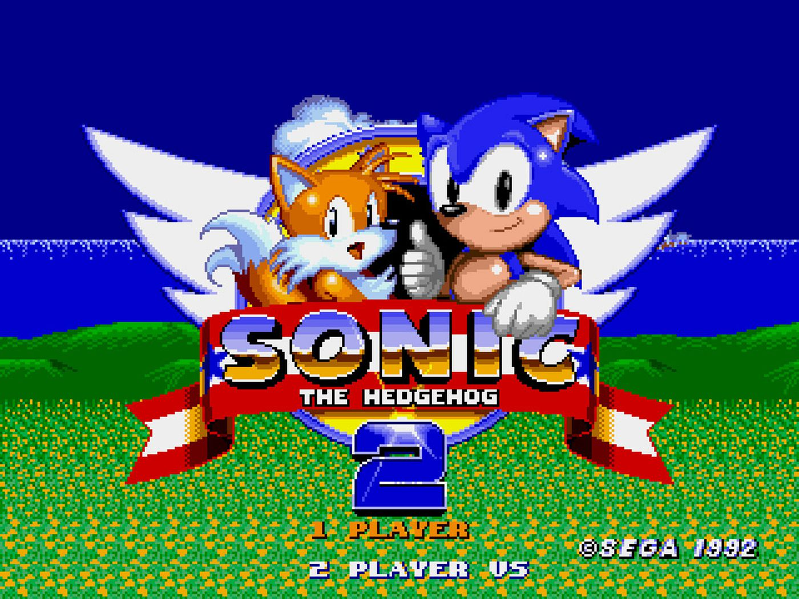
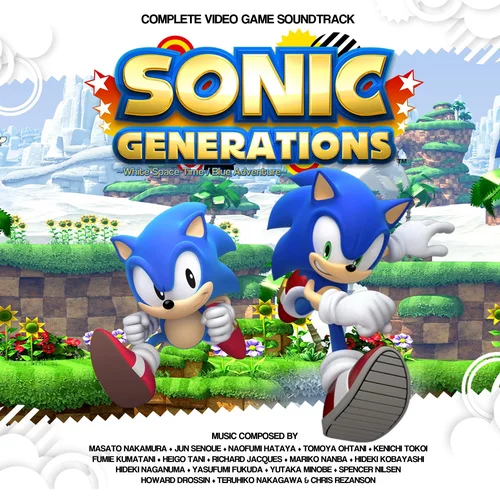

Catálogo de jogos
Confira abaixo uma seleção dos principais títulos da franquia Sonic the Hedgehog, desde os clássicos até os mais recentes.

🎮 Sonic the Hedgehog (1991)
🕹️ Mega Drive / Sega Genesis
📅 Ano: 1991
O jogo que começou tudo! Sonic corre por cenários coloridos coletando anéis e enfrentando o Dr. Robotnik.

💫 Sonic the Hedgehog 2 (1992)
🕹️ Mega Drive / Sega Genesis
📅 Ano: 1992
Introduz Tails e o Spin Dash. Um dos jogos mais vendidos da SEGA.

🌍 Sonic Generations (2011)
🕹️ PS3 / Xbox 360 / PC
📅 Ano: 2011
Comemoração dos 20 anos do Sonic, juntando o Sonic clássico e o moderno.

🏆 Sonic Mania (2017)
🕹️ PS4 / Switch / Xbox / PC
📅 Ano: 2017
Uma homenagem aos fãs e aos jogos 2D clássicos com novas fases e trilhas nostálgicas.